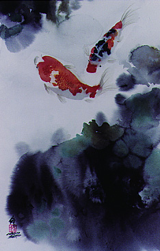

|
Acorn Haiku Magazine Boston Haiku Society Captain Haiku's Secret Hideout - the haiku of Michael Dylan Welch Dhugal J. Lindsay's Haiku Universe Full Moon haijinx on-line journal Haiku Habit The Haiku Society of America Haiku Spirit Haiku World - maintained by Gary Warner the haiku year Happa-no-kofu the heron's nest Interactive Photo Haiku In the Moonlight a Worm - a haiku bibliography Haiku of Kobayashi Issa translated by David G. Lanoue Japanese Haiku Poetry Resources broken out by age Japan Poem Neca Stoller's Haiku Cupboard Reeds - Contemporary Haiga Jane Reichold's AHA! Poetry Page Timothy Russell's haiku exercise History of Haiku by Ryu Yotsuya Sangeet's Haiku and Poetry Corner Snapshots Haiku Magazine still - edited by ai li Temps Libres - edited by Serge Tome Geert Verbeke Singing Bowls Wisteria Press Yellow Moon |
 |
Back to haikupoet.com
...or visit extra special bitter
...or just
send me email.